- Módulo: Fundamentos de Hardware
- Título del trabajo Almacenamiento en la nube
- Componentes del grupo: Iván José Hernández Regalado
- Curso Académico: 2013/2014
- Fecha de entrega: 10 de Abril de 2014
1.Creación de cuenta
Antes de comenzar con la instalación del DROPBOX nos registramos entrando en su página oficial poniendo nuestro correo electrónico
y luego verificandolo. Elegiremos una cuenta básica que no es de pago y tenemos unos cuantos 2GB para subir.
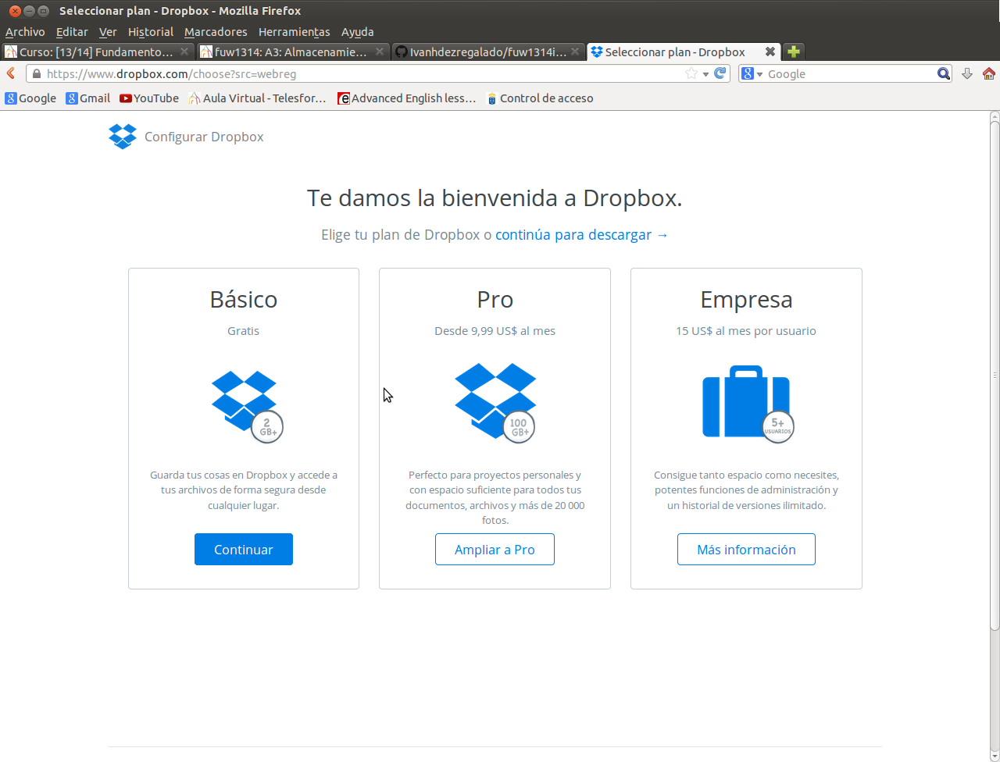
- Seguiremos los pasos que nos proporciona la página dependiendo de si nuestro sistema es de 32 o 64 bits.
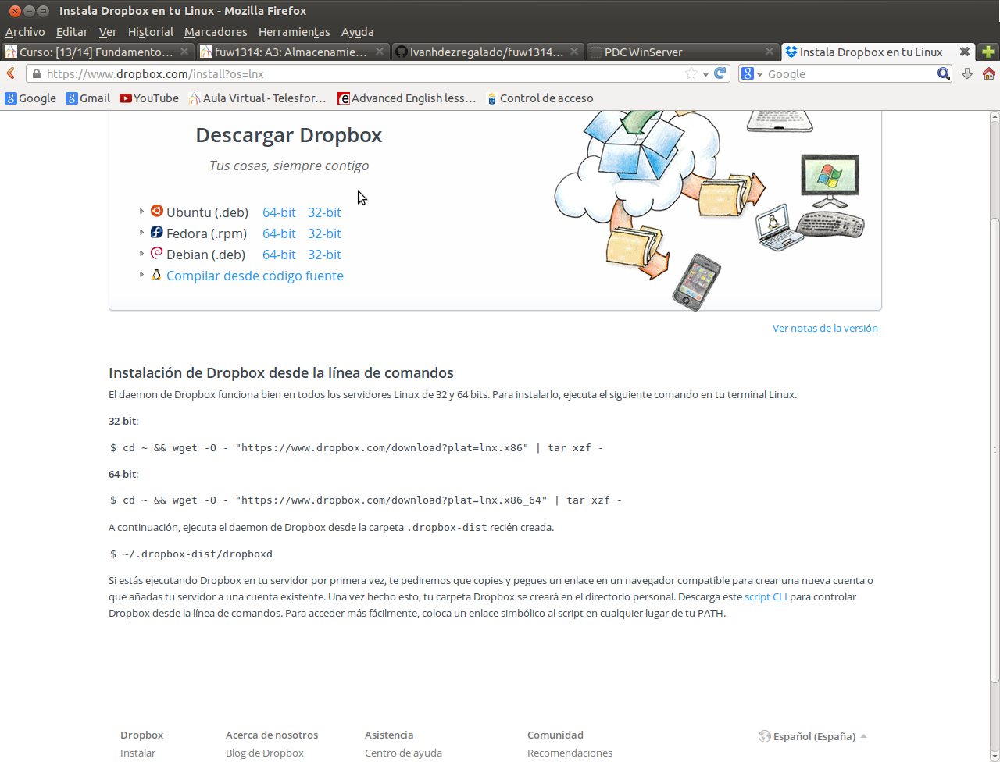
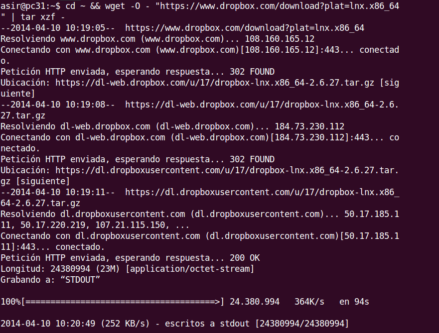
- Tras terminar la descarga ejecutamos el siguiente comando para iniciar la instalación.
- Elegimos que tenemos una cuenta ya creada de DROPBOX y metemos nuestros datos de usuario.
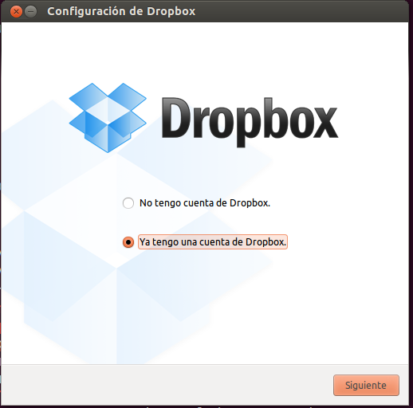
- Escogemos instalación típica y estaría completada nuestra instalación del DROPBOX.
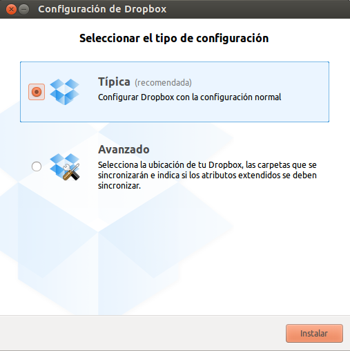
- En la carpeta que se creo automáticamente al instalar DROPBOX creamos algun archivo o carpeta para comprobar si efectivamente
se subió y se ve en la página web.
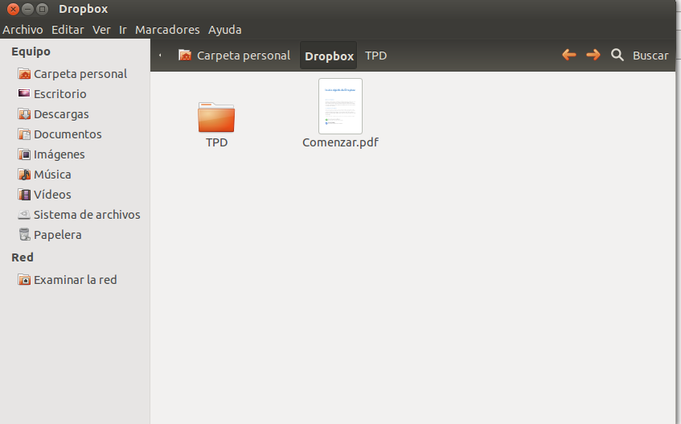
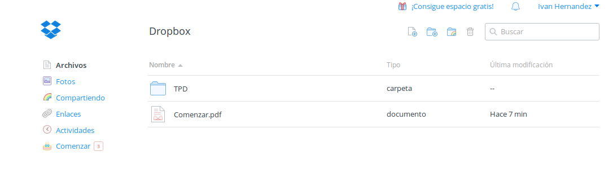
- Para comenzar la instalación en una máquina windows solo tenemos que entrar en la página web y en la opción descargar empezaría la descarga.
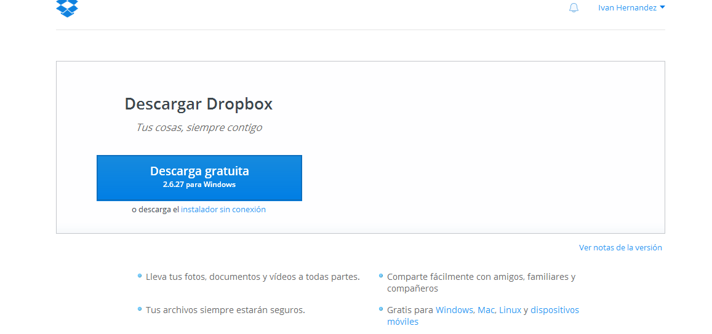
- Luego tras terminar la descargar le damos a ejecutar y comienza la instalación.
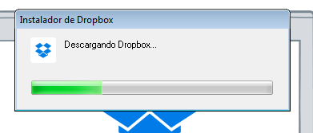
- Ahora iniciamos el DROPBOX y metemos los datos de nuestra cuenta.
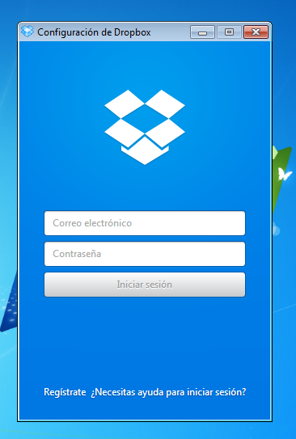
- Luego le damos a abrir mi carpeta de DROPBOX para que nos rediriga a la carpeta creada durante la instalación.
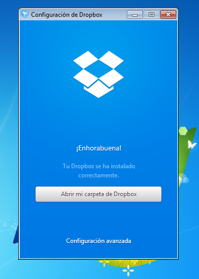
- Tras esto último ya solo quedaría probar creando un archivo o carpeta dentro de la carpeta abierta y comprobar si esta correctamente
subido.
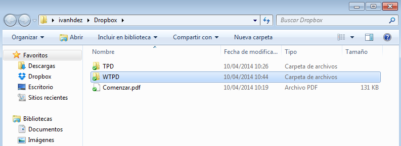